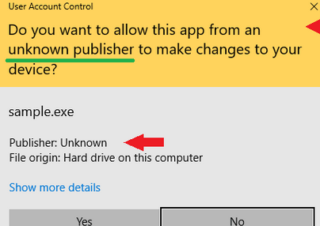

If you have an unsigned binary, which requires administrator privileges, when a target runs the binary following window will show up:

The window’s header is yellow, which means the binary is not signed, also in the current example, a publisher is unknown.
There is a way to request administrator privileges a bit more convincing way, execute cmd.exe with elevated privileges and run your binary from the cmd.exe process.
BOOL run()
{
const std::shared_ptr<TCHAR> process_path { new TCHAR[MAX_PATH]()};
GetModuleFileNameExW(GetCurrentProcess(), nullptr, process_path.get(), MAX_PATH);
const auto arg = std::wstring{ L"/c " } +process_path.get();
SHELLEXECUTEINFO exec_info{};
exec_info.cbSize = sizeof(exec_info);
exec_info.hwnd = nullptr;
exec_info.lpVerb = L"runas";
exec_info.lpFile = L"cmd.exe";
exec_info.lpParameters = arg.c_str();
exec_info.nShow = SW_SHOW; // SW_HIDE;
return ShellExecuteEx(&exec_info);
}
With this approach, the window is blue (binary is signed) and also publisher is Microsoft, it’s more likely that the target will approve the request: